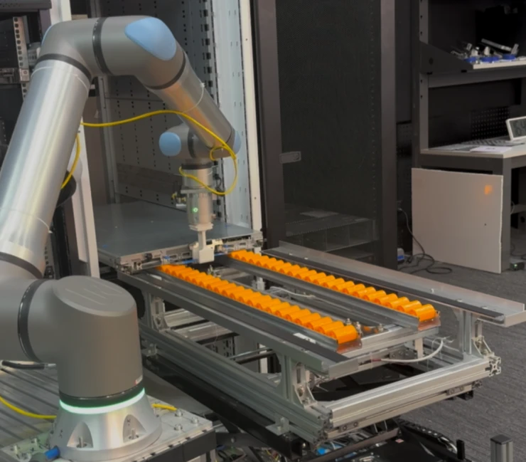

Robotics · Johns Hopkins University
Zepei Lin
Featured research
Microsoft Research Asia
Real robot experimentsRobotic manipulation · MSRA internship
Force-guided
server handling
During my internship at Microsoft Research Asia, I spent six months developing a server lift robot for automated server handling in data centers. My work covered mechanical design, sensor integration, force-feedback control, and integration with the broader robotic system through ROS 2 and web APIs.
Explore the project & watch the demoEducation
Johns Hopkins University
Master's student in Robotics
Aug. 2026–Present
Zhejiang University
Mechanical Engineering
Sep. 2022–Jun. 2026